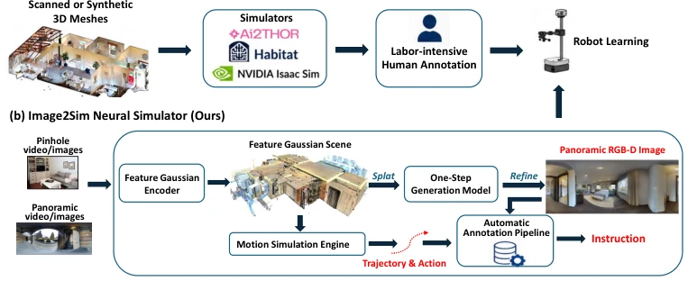
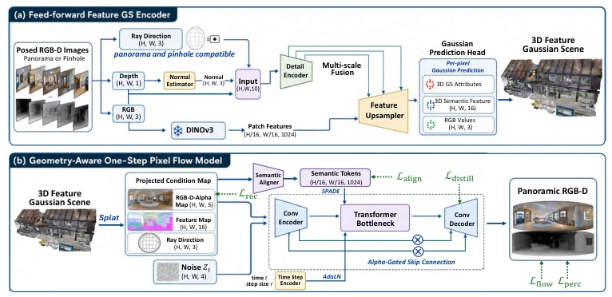
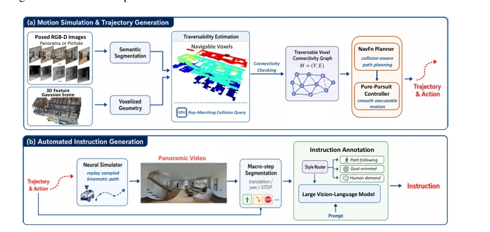
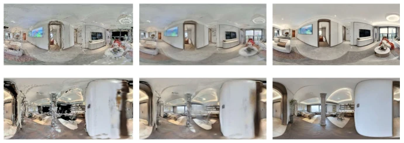
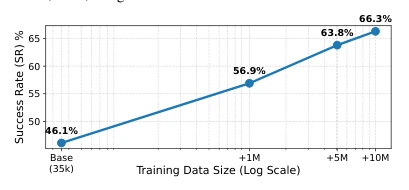
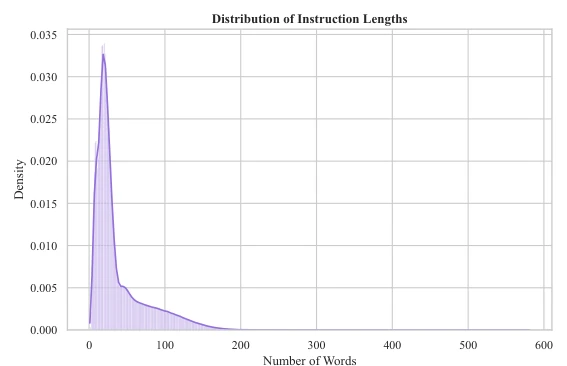
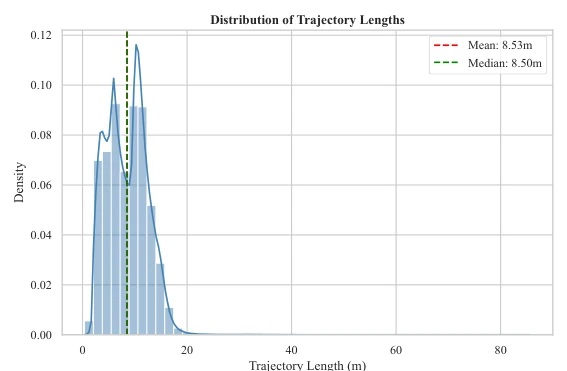
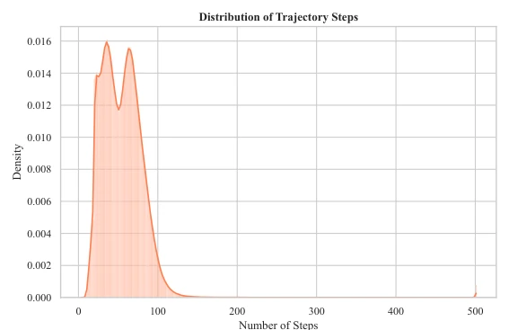
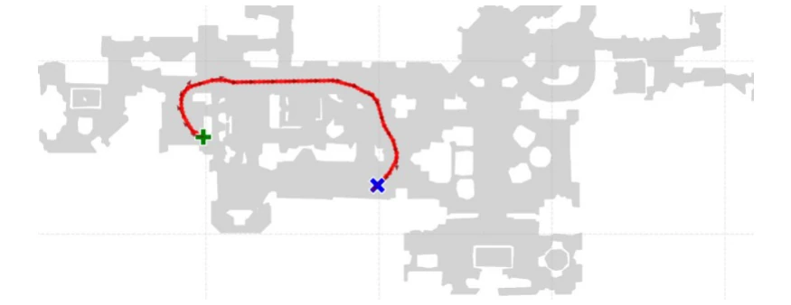

This paper prescribes a potent remedy for the "data hunger" of embodied navigation. Image2Sim essentially uses 3DGS as geometric anchors, paired with a pixel flow generator for texture completion, and wraps a VLM to write instructions, forcibly converting video into an interactive simulation environment. Although hailed as a "generative neural simulator", the core still decouples geometry and rendering, avoiding the slow optimization problem of traditional NeRF. The results are indeed stunning; zero-shot transfer to Habitat and the real robot Stretch 3 both outperformed baselines, proving that "data is capability" remains effective in the embodied field. However, do not be fooled by the word "generative"; it cannot handle movable objects, and the physics engine is limited to collision detection, still far from the true physical world. This "pseudo-simulation" can run navigation, but is far from general-purpose robots, belonging to the pragmatic route of "trading data for performance", but also exposes the shortcomings of current simulators in dynamic interaction.
研究动机Motivation
具身导航的核心瓶颈在于缺乏可扩展、高保真且物理可交互的 3D 环境。现有数据源面临两难：真实世界扫描（如 Matterport3D [15]）视觉逼真但规模小、成本高；合成环境（如 Procthor [19]）虽易扩展，但存在显著的 sim-to-real 差距，资产和布局不真实。近期生成式视频模型 [22-24] 虽能提供视觉数据，却难以维持刚体一致性和显式碰撞结构，无法支持闭环交互。因此，亟需一种既能保留真实视觉 fidelity，又具备显式 3D 物理 grounding 的可扩展数据生成方案，以打破当前导航模型泛化能力受限的局面，实现从被动观察到主动交互的跨越。
The core bottleneck of embodied navigation lies in the lack of scalable, high-fidelity, and physically interactive 3D environments. Existing data sources face a dilemma: real-world scans (e.g., Matterport3D [15]) are visually realistic but small-scale and costly; synthetic environments (e.g., Procthor [19]) are easy to scale but suffer from significant sim-to-real gaps, with unrealistic assets and layouts. Recent generative video models [22-24] can provide visual data, but struggle to maintain rigid body consistency and explicit collision structures, unable to support closed-loop interaction. Therefore, there is an urgent need for a scalable data generation scheme that retains real visual fidelity while possessing explicit 3D physical grounding, to break the current situation where navigation model generalization is limited, achieving a leap from passive observation to active interaction.

Figure 1: Comparison of (a) traditional navigation data pipeline and (b) our Image2Sim framework.
The overall Pipeline is divided into four steps: scene construction, rendering, motion simulation, and instruction generation. First, a feed-forward feature Gaussian model is used to elevate the Pose RGB-D sequence in one step to a 3D feature Gaussian scene, retaining geometry and semantic information without per-scene optimization. Second, a geometry-aware one-step pixel flow renderer is proposed, converting sparse Gaussian projections into high-quality panoramic RGB-D observations, distinguishing reliable projections and areas to be completed via an Alpha-gated mechanism, combined with momentum self-distillation for stable generation, solving the hole problem under sparse views. Next, a traversable graph is constructed based on the voxelized scene, using the NavFn planner to generate physically valid trajectories, supporting collision awareness. Finally, VLM is used to automatically annotate trajectories as navigation instructions. The core innovation lies in decoupling spatial anchoring and observation synthesis, ensuring geometric consistency while achieving real-time rendering, supporting large-scale data synthesis.

Figure 2: Framework of the feed-forward GS encoder and one-step pixel flow model.

Figure 3: Framework of the motion simulation engine and automated instruction generation.
20K interactive scenes were constructed on datasets such as RealSee3D, Structured3D, generating 10M+ samples. On benchmarks such as R2R-CE [11], RxR-CE [12], Image2Nav significantly outperformed in-domain methods like EfficientVLN when zero-shot transferred to Habitat, with SPL increased to 61.5. Scaling experiments show that increasing data volume brings continuous gains, with no saturation appearing. In real-world tests, path following success rate on the Stretch 3 robot increased to 11/20, outperforming baselines like JanusVLN. Ablation experiments verified the necessity of pixel flow, semantic features, and self-distillation modules. Results indicate that the neural simulator can effectively narrow the sim-to-real gap, support large-scale navigation training, and verify the critical role of data scale in embodied intelligence.

Figure 4: Visualization of Gaussian Splatting and Pixel Flow renderings in high-noise sparse scenes.

Figure 5: Scaling law curve of training data.
其他图片Other Figures

Figure 6: Distribution of instruction lengths (number of words) in the generated dataset.

Figure 7: Distribution of trajectory lengths (in meters).

Figure 8: Distribution of trajectory steps (number of discrete actions).

Figure 10: Visualization of navigable voxels and path planning.